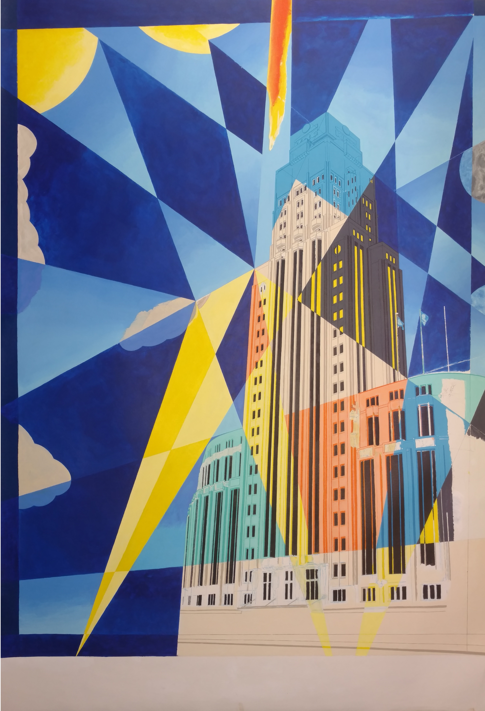

"Boerentoren" September, 2018
While i was watching the show "white Collar", I saw a painting passing by that really intrigued me.
It was an Art Deco painting of the Chrystler building.
After some research, I found 2 paintings that i wanted to use as an inspirational assist for my own painting.
The tower i'm painting, is the iconic "Boerentoren", in my hometown of Antwerp.
It is also known as the "KBC Tower", as that's the name of the bank that's currently housed in it.
Making it 75 x 100 cm in Acrylics, it is quite a lengthy job. Combining it with my dayjob and other works of art, we're 3 years in the making...
Here are the two examples:

This painting is from the series

This is another one in the same style
And here's my version so far:
I cant's wait to see where it goes. I have changed the sun several times, from red flames on it with Egyptian Hieroglyphs, to one that shoots solar flares. In the end, i believe that less is more. Therefor i changed it back by overpainting it with cadmiumyellow.